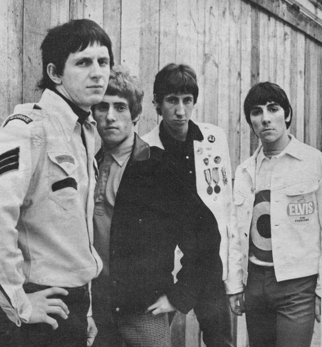

My Generation by The Who turned a stammering vocal into the sound of a generation refusing to sit down.
Pete Townshend wrote it while trying to explain his own restlessness.
Six decades later, it still opens with rock's most quoted line.

Table of Contents
Writing the Song
Pete Townshend wrote the lyrics for My Generation on a train in 1965.
He later credited blues singer Mose Allison's "Young Man Blues" as the spark.
"Without Mose I wouldn't have written 'My Generation,'" he said flatly.
Townshend had bought a Packard hearse to drive around London.
He has said the Queen Mother had it towed, saying it reminded her of her husband's funeral.
A Line Drawn Between Two Generations
Townshend later explained the song was his attempt to separate two generations.
He said the older generation had sacrificed everything for his own.
But he said they "weren't able to give us anything, no guidance, no inspiration."
Townshend called it "very much about trying to find a place in society."
The famous line about hoping to die before getting old was never meant literally.
Townshend has said that in his head at the time, "old" mostly meant "rich."
Recording My Generation by The Who
The Who recorded the track on October 13, 1965, at IBC Studios in London, with producer Shel Talmy.
Daltrey sang lead, Townshend played guitar, Entwistle played bass, and Moon drummed.
The guitars were tuned down a whole step, and the track ends in a wall of feedback instead of a clean fade.
The Stutter Nobody Planned
Daltrey's stammering delivery on lines like "why don't you all f-f-fade away" is the record's most famous detail.
Daltrey has said he could not hear his own voice properly through the studio monitors.
He stumbled over the words as a result.
Talmy called it "one of those happy accidents" and kept it on the master.
The BBC initially hesitated to play the single, worried it would offend listeners who stutter, before reversing course.
An Early Rock Bass Solo
Entwistle played a Fender Jazz Bass strung with nylon tapewound strings for extra growl.
His solo is often cited as one of rock's first prominent bass solos on a chart single.
Chart Success and Legacy
The single came out in the UK on October 29, 1965, backed with "Shout and Shimmy."
It reached number 2 on the UK singles chart, the band's highest-charting single at home.
In the United States, with a different B-side, "Out in the Street," it stalled at number 74.
It fared better elsewhere, reaching number 2 in Australia and number 3 in Canada.
It later titled The Who's December 1965 debut album.
A Line to Punk and Beyond
Critics often call My Generation one of rock's earliest proto-punk records, a decade before punk had a name.
Rolling Stone ranked it 11th on its 500 Greatest Songs of All Time list in 2004.
A 2021 revision placed it 232nd.
It was inducted into the Grammy Hall of Fame.
The Rock and Roll Hall of Fame named it among its 500 Songs That Shaped Rock and Roll.
Patti Smith, Green Day, Oasis, and Iron Maiden have all recorded versions.
An extended live version later became a highlight of the 1970 album Live at Leeds.
FAQ
Who wrote My Generation?
Pete Townshend wrote it alone, reportedly finishing the lyrics on a train.
He later said blues singer Mose Allison's "Young Man Blues" pushed him toward the song's angry tone.
What does "hope I die before I get old" mean?
Townshend said the line was about feeling shut out by an older generation that could not offer guidance after the war.
It was not a literal death wish.
He has said "old" mostly meant "rich" to him at the time.
Why does Roger Daltrey stutter on the recording?
Accounts differ.
Daltrey has said he stumbled because he could not hear his own voice properly in the studio monitors.
Producer Shel Talmy called the effect a happy accident that the band decided to keep.
Did My Generation reach number one?
No, it peaked at number 2 on the UK singles chart in November 1965.
That remains The Who's highest-charting single at home, though it only reached number 74 in the United States.
Has the song been covered by other artists?
Yes, Patti Smith, Green Day, Oasis, and Iron Maiden have all recorded versions.
The song is widely cited as an early influence on punk rock a decade before the genre had a name.
The stutter and the snarl still carry the same defiance they had in 1965.
A young band named a divide that every generation after it has felt in its own way.
It belongs to the same run of mid-1960s British Invasion singles that made The Who a chart force before "Tommy" ever existed.
That same scene produced the snarl of The Rolling Stones and the social bite of The Kinks.
Back to the 1960smusic.net homepage to explore the rest of the decade, starting here with My Generation by The Who.